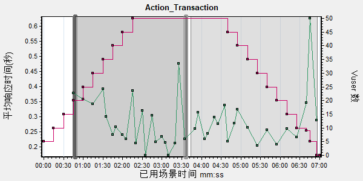

| 观察 |
| 显示与以下参数关联的度量， Action_Transaction 最低关联百分比为: |
| 重新计算 |

| Vusers | |
|
| 查看图 |
| Action_Transaction事务分析 | 已分析周期:000:00:48 - 000:03:36 | |||||||
| 事务名: | Action_Transaction |
| 事务持续时间: | 000:00:48 - 000:06:59 |
| 筛选器: | (未 包括思考时间) |
| 错误 |
| 接受测试的应用程序错误数 |
| 错误类型 | 错误代码 | 错误模板 | 消息总数 | |||||
|
|
||||||||
| 所有错误 |
| 错误类型 | 错误代码 | 错误模板 | 消息总数 | |||||
|
|
||||||||
| 观察设置 |
| 关联图: | 运行 Vuser,每秒错误数 (按描述),每秒错误数,每秒点击次数,吞吐量,每秒下载页数,连接,每秒连接数,Windows 资源,UNIX 资源,SNMP 资源,SiteScope,网络延迟时间,DB2,Oracle,SQL Server,服务器资源,Sybase |
| 报告将显示与不充分数据的关联。 |
| 报告将显示错误信息。 |
| 图 |
| 选定事务和时间范围的快照。 |
|  |
|